UNITY · ХИМИК-ЛАБОРАНТ
Сначала найди свои задания
В цехе подсвечен компьютер у рабочего стола слева внизу. Подойди и нажми E или кликни по нему. Внутри — знакомый рабочий стол Windows 10, Проводник и первое поручение на смену.
Подойти к компьютеруНайти лабораториюСверить дату и код пробы
Ниже — кадры из настоящей Unity WebGL-сборки. Открыть игру · Сценарий и ограничения
01. Компьютер ждёт тебя
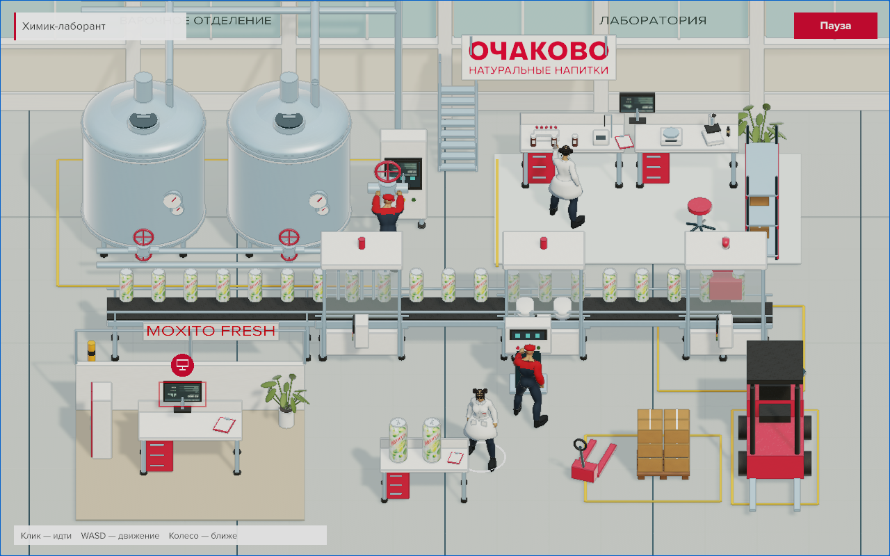
Тонкий контур и маленький круглый значок выделяют компьютер без большой надписи. Клик издалека ведёт к нему; рядом значок показывает E.
02. Знакомый рабочий стол
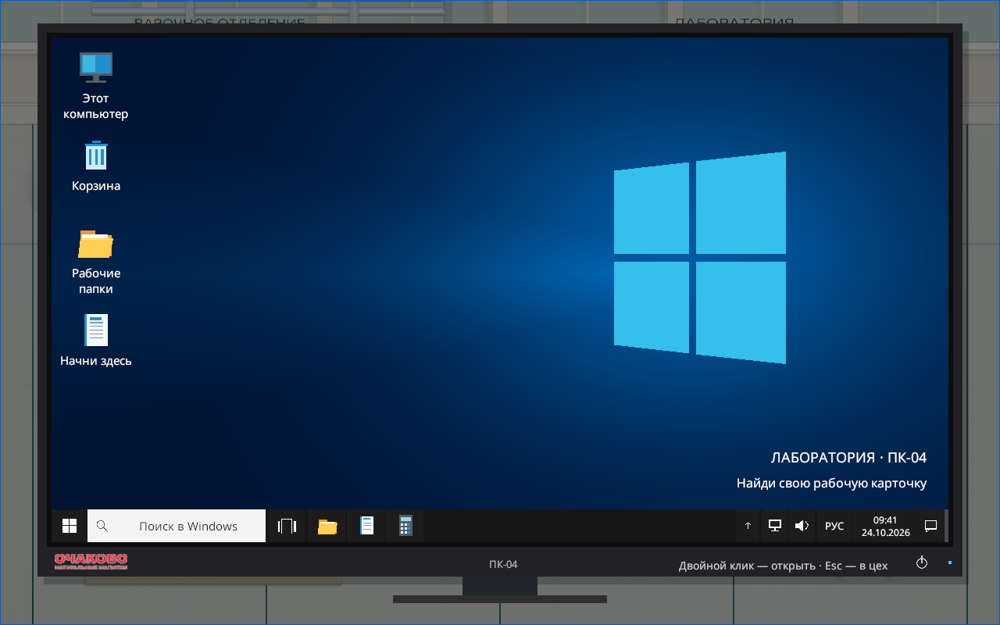
«Этот компьютер», «Корзина», «Рабочие папки», панель задач и «Пуск». На ПК — двойной клик, на touch — одно касание.
Приложения и привычные кнопки
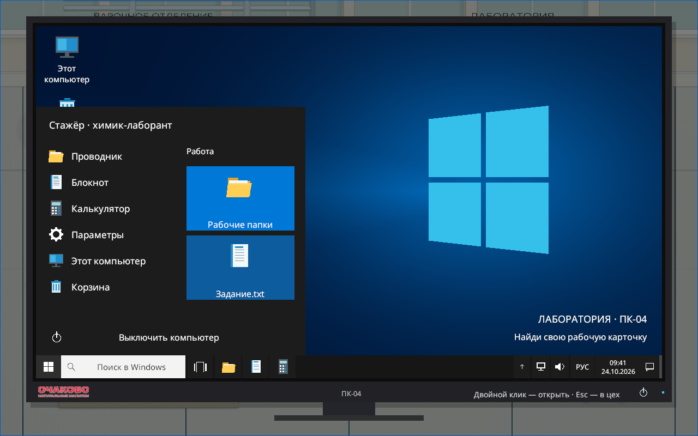
Пуск открывает приложения, настройки и рабочие папки.
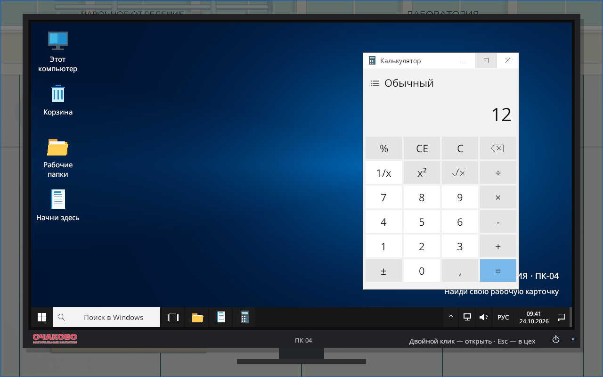
Калькулятор считает. Проводник поддерживает поиск, представления, создание папок, копирование и Корзину.
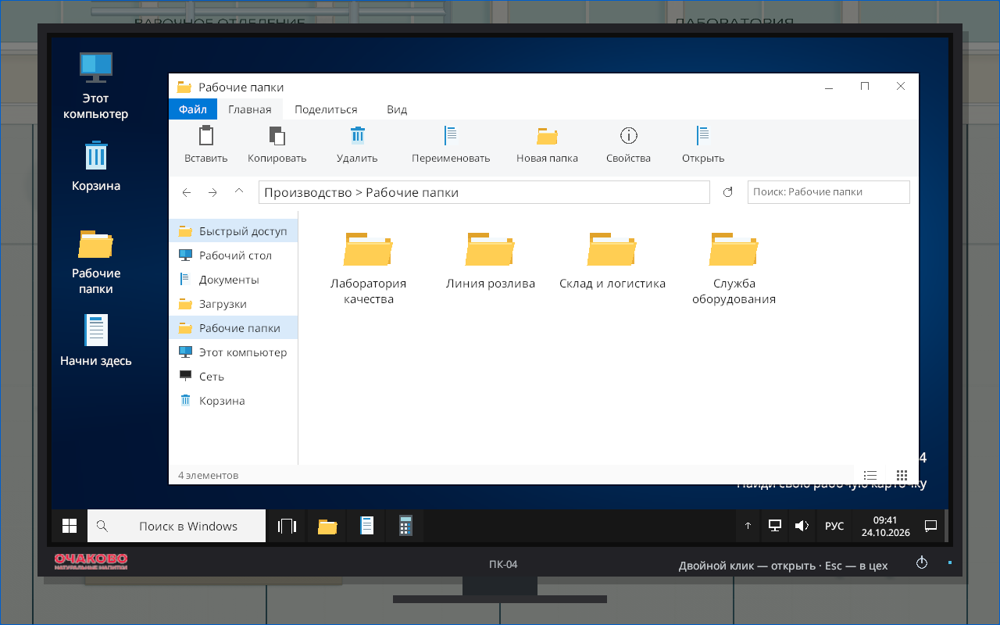
03. Можно спокойно ошибиться
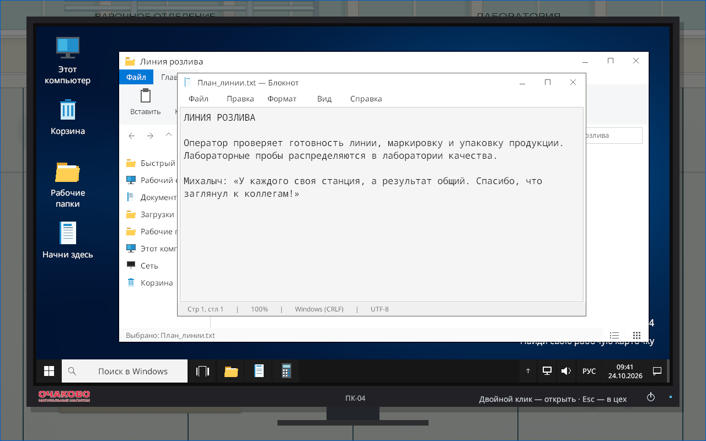
Документы других отделов открываются в Блокноте. Можно прочитать их и вернуться без штрафа.
04. Найти актуальное поручение
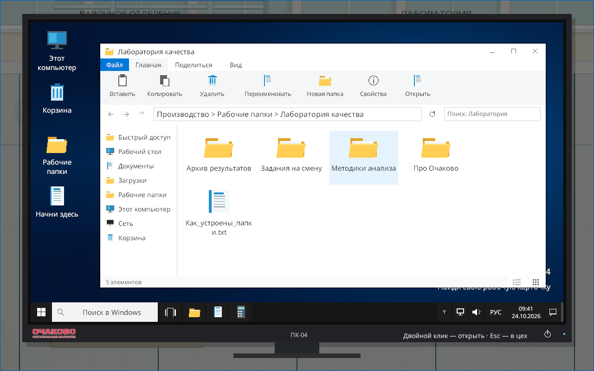
Среди 41 элемента есть архив, методики, текущая смена и документы коллег. Названия и содержимое помогают выбрать путь.
05. Задание найдено
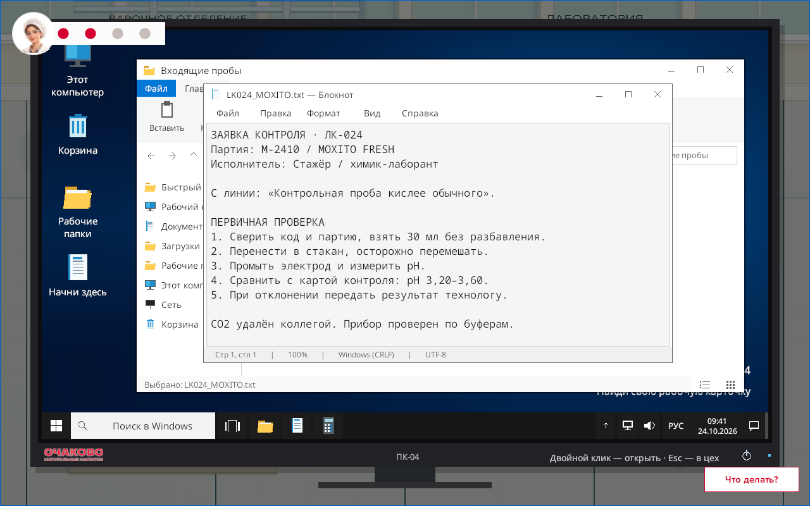
Карточка ЛК-024 назначена стажёру в текущую смену. Открытие именно этого файла завершает первую головоломку и разблокирует лабораторный стол справа сверху. Там можно подготовить порцию без разбавления, измерить pH и передать отклонение технологу.
06. Журнал — ключ к поиску
Дата смены, исполнитель «Стажёр» и код ЛК-024 ведут к нужной карточке. Карточка прошлого дня с похожим именем не завершает головоломку.
07. Михалыч оставил записку
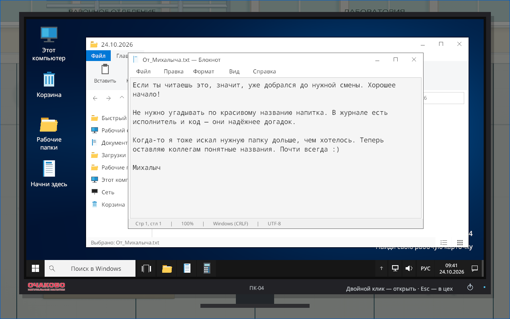
Необязательные находки поддерживают любопытство: добрые сообщения, шутки про файлы и конвейер.
08. Узнать чуть больше
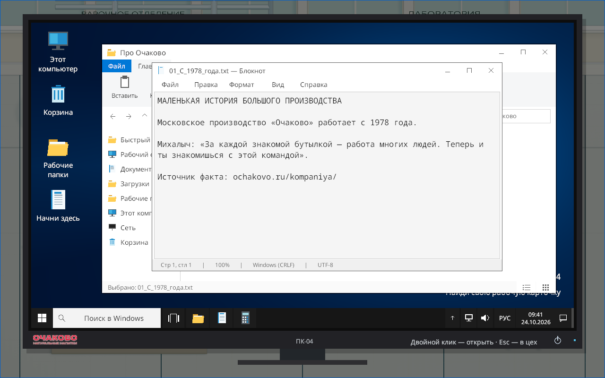
В папке «Про Очаково» — факты об истории, географии, солоде и двойном брожении. Источники указаны в документах.
Михалыч и фронтальная камера
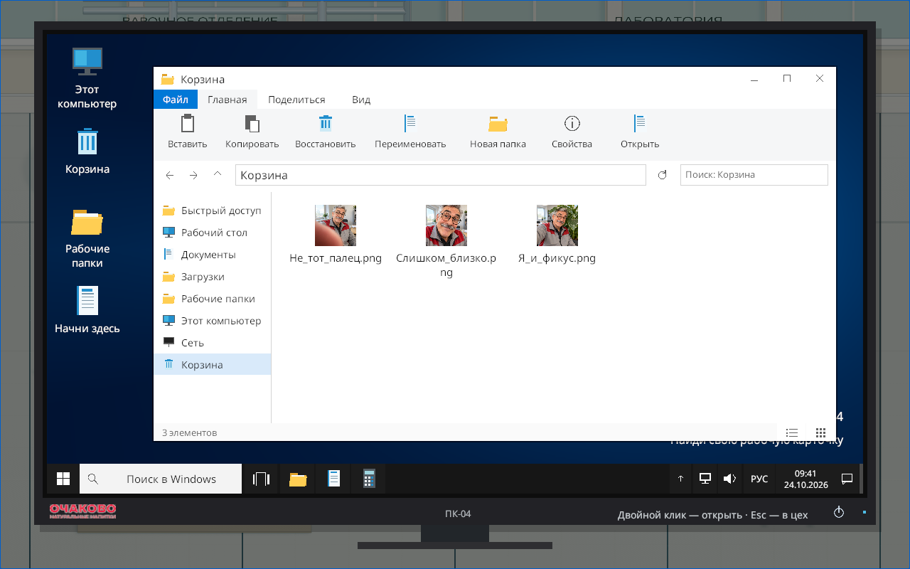
Неудачные дубли можно открыть, перелистать и восстановить в «Документы».
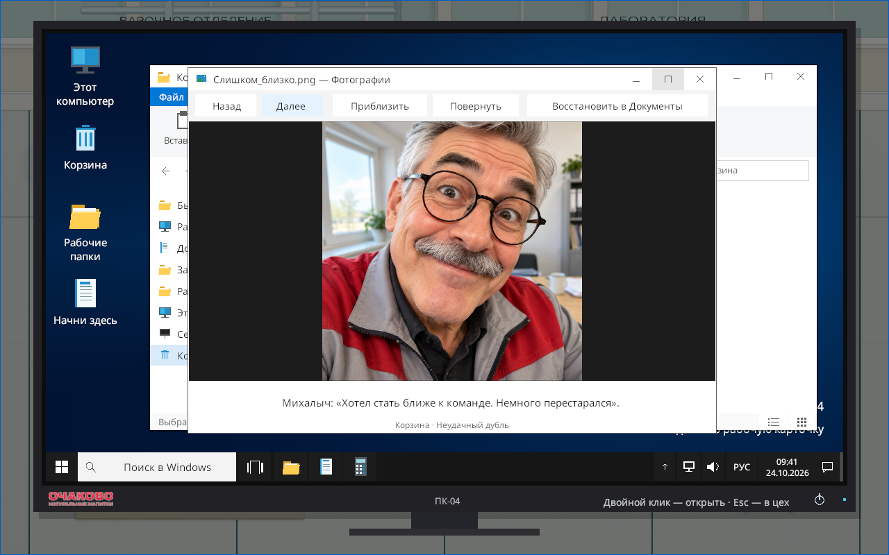
Дальше: заявка «Мохито кислит» →